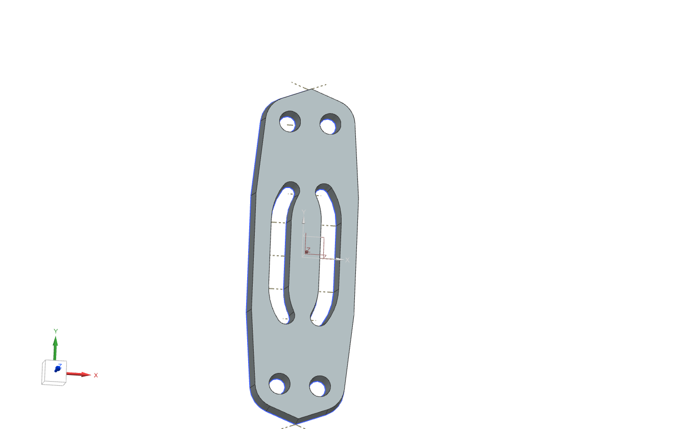
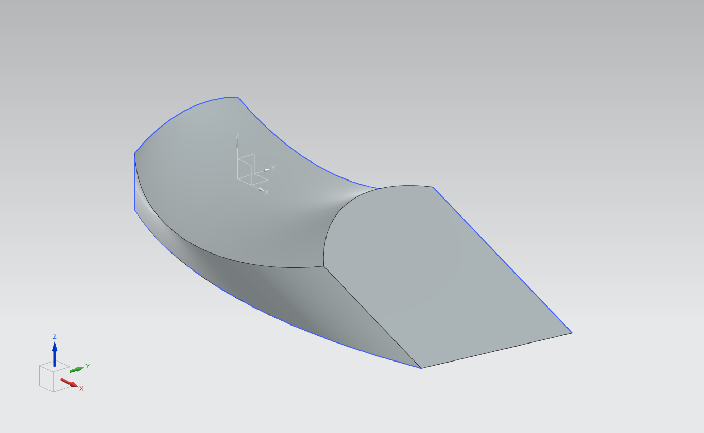
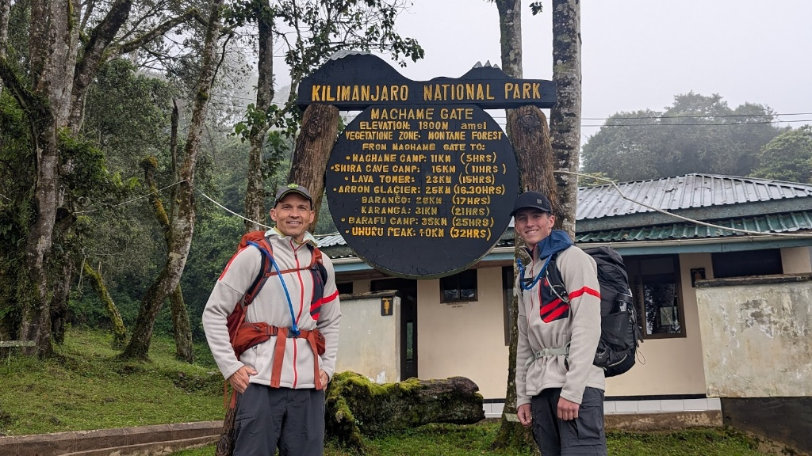
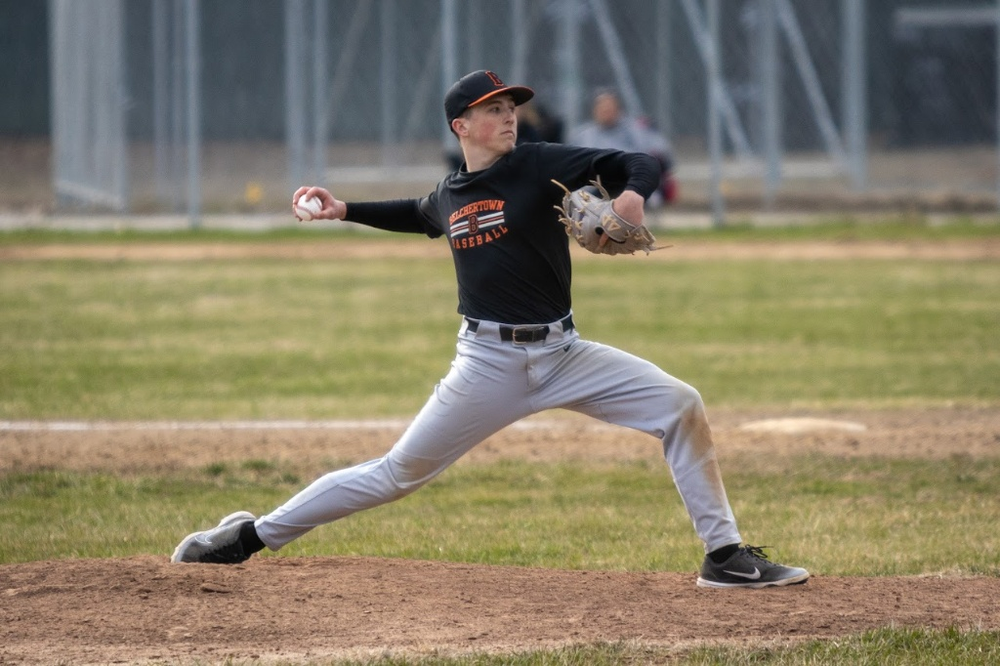
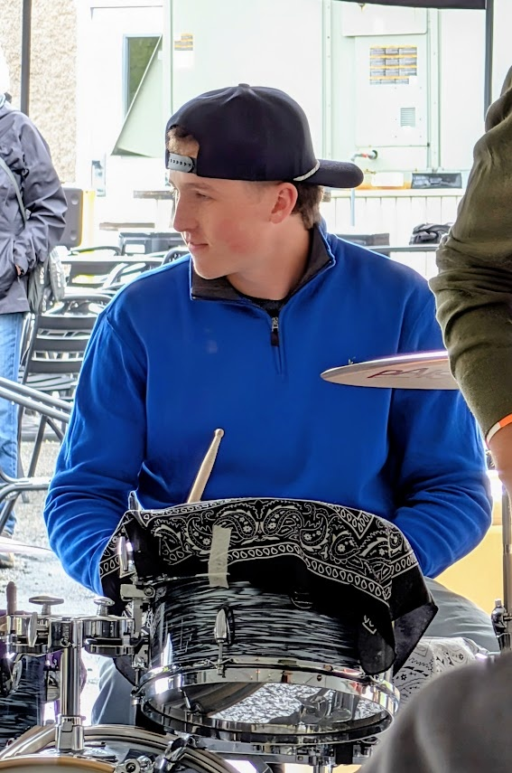
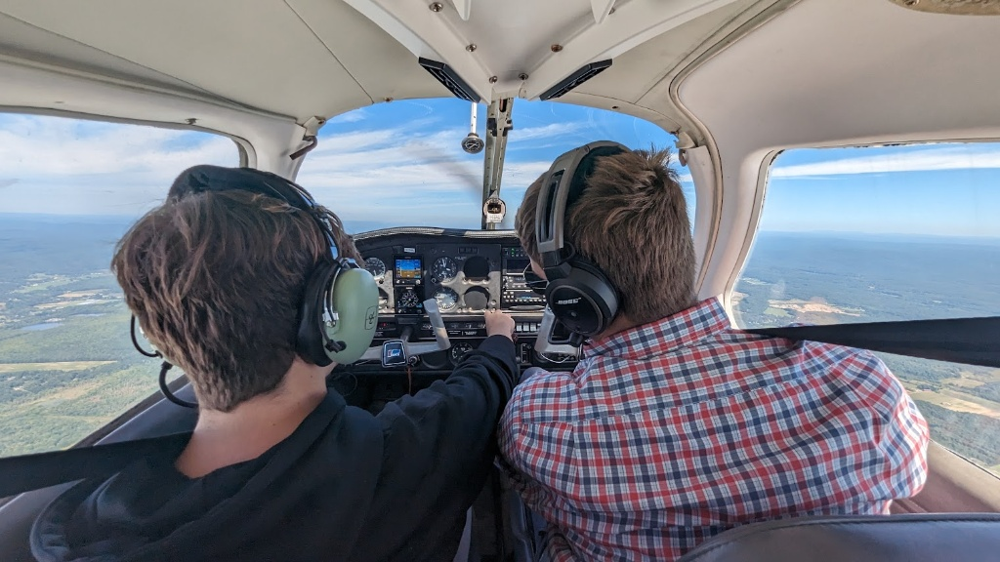
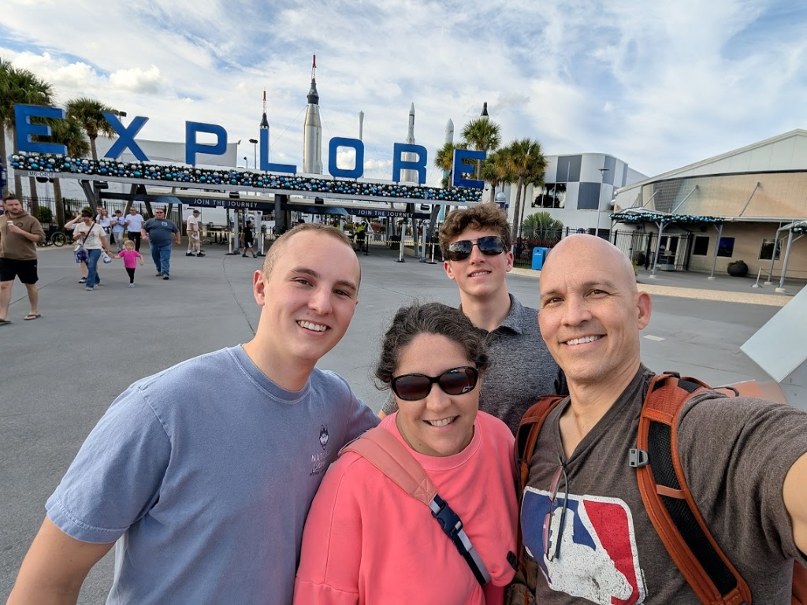

Engineering & CAD Projects
Applied 3D solid modeling, parametric feature design, and Design for Manufacturability (DFM) principles constructed in Siemens NX. Click on any model preview to inspect full-screen high-resolution views.

Heavy Equipment Track Plate
Parametric solid modeling of an asymmetric structural drive component designed for heavy cyclic loading, track link interconnection, and ground engagement.
View Engineering & CAD Highlights
- Constructed multi-plane datum references, asymmetric profile extrusions, and draft angles suitable for forging and casting constraints.
- Engineered structural stiffening ribs, wear surface recesses, and high-tolerance pin-mounting bosses configured for heavy shear load distribution.
- Applied ASME Y14.5 engineering standards, feature tree organization, and parametric expressions for rapid dimensional adjustments.

Complex Carved Blade Profile
Aerodynamic and fluid flow surface geometry modeled with compound curvature, variable cross-section sweeps, and root mounting retention.
View Engineering & CAD Highlights
- Executed continuous guide-curve lofts, complex sweeps, and sculptured parametric surfaces across variable chord angles.
- Modeled integrated root shank transitions and fillet blending to eliminate sharp internal stress concentrations.
- Maintained tangent and curvature continuity (G1/G2) across all sculpted face transitions to optimize fluid dynamic flow.
About Me
I am an undergraduate student studying Industrial and Management Engineering at Rensselaer Polytechnic Institute (RPI). My coursework and project work center on computer-aided design, lean manufacturing principles, ergonomics, and process workflow optimization.
I combine academic discipline with high-level athletic and personal endurance: competing as an NCAA Division III pitcher at RPI, training as a 4-year state championship swimmer, serving four years as student council president and class salutatorian, and successfully summiting Mount Kilimanjaro (19,341 ft) in July 2025.
Education & Academic Honors
Athletic Achievements & Leadership
Engineering Involvement, Leadership & Music
Community Service & Work Experience
Technical & Analytical Skills
Engineering & CAD
Siemens NX, 3D Solid Modeling, Parametric Surface Sweeps, Engineering Drawing Standards, DFM
Data & Computing
Microsoft Excel (Data Modeling, Advanced Nested Formulas), Google Sheets, Python, Git/GitHub, VS Code, HTML5/CSS3
Operations & Leadership
Lean Methodologies, Workflow Analysis, Public Speaking, Cross-Functional Team Coordination, Event Budgeting
Photo Gallery & Highlights
Click any image to view full screen.

Mount Kilimanjaro Summit
19,341 ft · Machame Route · Tanzania ↗

NCAA DIII Varsity Pitching
RPI Varsity Baseball Pitcher ↗

Marching Band & Percussion
Drum Captain · MICCA Gold Medalist ↗

Aviation & Flight Systems
Cockpit Instruments & Navigation ↗

Family & Milestone Travel
Kennedy Space Center Exploration (Click to expand full screen) ↗
Resume Q&A Assistant
Type a keyword or question below to query Ryan's background:
Get In Touch
Currently seeking Summer 2027 internship opportunities in Industrial, Manufacturing, and Operations Engineering.